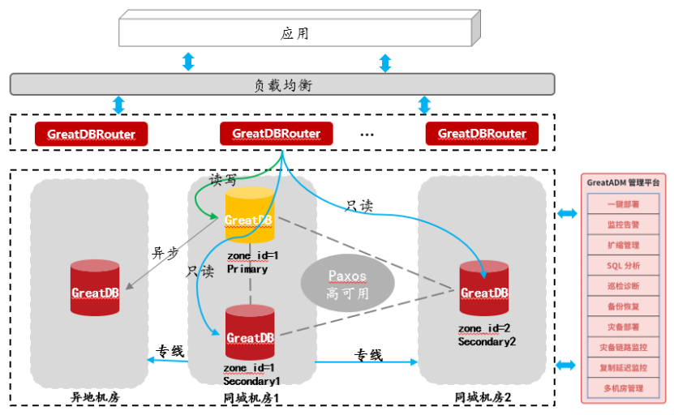

解决方案 | 200+系统信创改造！万里数据库助力中信银行信用卡中心实现高效平滑迁移
背/景 中信银行信用卡中心
为贯彻落实《金融科技发展规划（2022—2025年）》中关于“强化科技赋能，夯实数字化转型基础”的指导精神，推动关键技术创新与业务深度融合，中信银行信用卡中心积极响应国家信创战略，加快推进信息技术应用创新体系建设，深化数字平台应用，持续提升科技赋能水平，探索可复制、可推广的金融数字化转型路径。
中信银行信用卡中心在本地生活、渠道用卡服务、大数据运营管理、网络管理服务及客户服务等200余个业务系统中，原采用MySQL 5.7/8.0数据库，部署架构为MGR结合主从半同步模式，并利用haproxy与keepalived实现高可用。
根据中国人民银行及中信银行相关管理要求，开源MySQL已无法满足信创标准，需全面迁移至安全可控的国产数据库。自2025年起，中信银行信用卡中心分批次采用万里安全数据库GreatDB对原有MySQL进行替换，计划于2027年底前完成全部系统的迁移工作。
01、银行业务系统 对数据库替换有哪些需求？
01 全国产兼容性
业务系统需实现全栈国产化改造，新选用的国产数据库须适配国产CPU、服务器及操作系统等全国产架构，具备良好的全国产软硬件生态兼容能力。
02 高可靠性
数据库需支持跨机房容灾部署与机房级故障自动切换能力，确保RPO=0，RTO可控，保障业务连续性与数据一致性。
03 完备的运维工具支撑
需提供完善的数据库迁移、同步、备份及日常运维工具，以降低运维复杂度，提升管理效率。
04 替换成本最小化
数据库应高度兼容MySQL语法及生态，支持MGR架构平滑迁移，实现业务系统代码零修改，最大限度控制迁移难度与改造成本。
02、100%兼容MySQL语法及生态 “光速”完成银行系统国产化
基于中信银行信用卡中心多业务场景及高并发压力特点，万里数据库项目团队秉持“应用不改、架构不动、运维延续”三大原则，采用GreatDB构建MGR三节点加一异地容灾节点的高可用架构，确保集群数据强一致性，并通过GreatDBRouter实现读写分离，有效分摊节点负载。
GreatDB具备地理标签（zone_id）配置能力，可在不同机房设置差异化标签，确保每个机房至少有一个节点持有最新事务数据。当同城某机房发生故障，集群可自动完成故障切换（failover），将服务无缝迁移至同城备用机房，实现RPO=0、RTO<10s的高可靠性目标。若同城双机房均异常，还可手动切换至异地容灾节点，保障基础服务不中断。
同时，通过部署GreatADM数据库运维管理平台，实现对GreatDB集群的实时监控与全生命周期管理，覆盖节点状态、性能指标及故障告警等多个维度。该平台在迁移阶段同步纳管MySQL与GreatDB，显著提升替换效率与DBA运维体验。

▲万里数据库GreatDB解决方案架构图
万里数据库为中信银行信用卡中心提供了高性能、高安全、稳定可靠的数据库整体迁移方案。试点验证表明，迁移过程无需业务代码调整，极大减轻了迁移工作量与风险，为客户推进全面信创改造奠定了坚实基础。结合专业高效的原厂技术服务支持，中信银行信用卡中心客户对在2027年前完成全部200余套业务系统的信创改造充满信心。
03、方案价值
1高度兼容，无感迁移
万里安全数据库GreatDB完全兼容MySQL语法及MGR架构，业务系统无需代码改造，实现无感知迁移；
2双轨并行，数据无忧
支持MySQL与GreatDB间双向主从复制，迁移过程中两库并行，业务切换灵活可靠；
3同城容灾，智能读写分离
通过GreatDBRouter实现读写请求路由与故障自动切换，主节点异常时业务连接自动重定向，可实现RPO=0，RTO＜10s；
4跨机房强一致保障
GreatDB特有的地理标签功能，确保关键事务在跨机房场景下的数据强一致性；
5全面监控，高效运维
GreatADM运维管理平台提供全面监控与告警功能，大幅提升数据库运维的响应速度与管理能效，使告警更及时，运维更高效。
END
未来，万里数据库将持续深化技术研发与产品创新，依托在数据库领域的技术积累与服务经验，与更多金融机构协同合作，共同推进金融行业关键信息基础设施的国产化替代与典型业务场景的深度落地。
万里数据库致力于以“金融+产业+生态”融合创新模式，夯实国家数字基础设施安全底座，为我国金融科技高质量发展注入强劲动力，共创金融信创新局面。